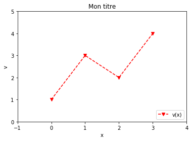
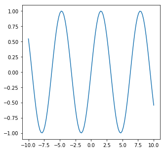
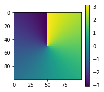
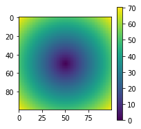
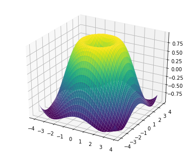
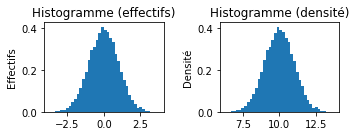
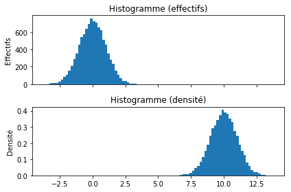
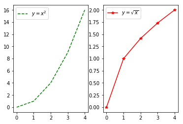
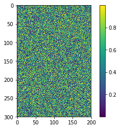
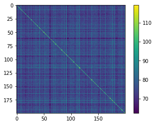

%matplotlib inlinenumpy (tableaux de données multi-dimensionnels) et matplotlib (visualisation en 2D et 3D pour Python)
Joseph Salmon : joseph.salmon@umontpellier.frAdapté du travail de
- A. Gramfort (alexandre.gramfort@inria.fr) http://alexandre.gramfort.net/
- J.R. Johansson (robert@riken.jp) http://dml.riken.jp/~rob/
Remarque: la commande “magique” %matplotlib inline peut aussi avoir de l’intérêt (à essayer donc!)
Voir aussi: - https://jakevdp.github.io/PythonDataScienceHandbook/01.03-magic-commands.html - https://ipython.org/ipython-doc/3/config/extensions/autoreload.html (pour autoreload) - https://ipython.readthedocs.io/en/stable/interactive/magics.html
Introduction
numpyest un module utilisé dans presque tous les projets de calcul numérique sousPython- Il fournit des structures de données performantes pour la manipulation de vecteurs, matrices et tenseurs plus généraux
numpyest écrit enCet enFortrand’où ses performances élevées lorsque les calculs sont vectorisés, c’est-à-dire formulés comme des opérations sur des vecteurs/matrices.
matplotlibest un module performant pour la génération de graphiques en 2D et 3D- syntaxe très proche de celle de Matlab
- supporte texte et étiquettes en \LaTeX
- sortie de qualité dans divers formats (.png, .pdf, .svg, .gif,etc.)
- interface graphique intéractive pour explorer les figures
guiqwt.pyplotest une alternative intéressante qui reprend la syntaxe dematplotlib(plus récente, encore peu utilisée)
Pour utiliser numpy et matplotlib il faut commencer par les importer :
import numpy as np # raccourci usuel
import matplotlib.pyplot as plt # raccourci usuelArrays en numpy
Dans la terminologie numpy, vecteurs, matrices et autres tenseurs (tableaux de dimension supérieure à 3) sont appelés arrays.
Création d’arrays numpy
Plusieurs possibilités:
- a partir de listes ou n-uplets
Python - en utilisant des fonctions dédiées, telles que
arange,linspace, etc. - par chargement à partir de fichiers
A partir de listes
Au moyen de la fonction numpy.array :
# un vecteur: l'argument de la fonction est une liste Python
v = np.array([1, 3, 2, 4])
print(v)
print(type(v))[1 3 2 4]
<class 'numpy.ndarray'>On peut alors visualiser ces données avec matplotlib:
v = np.array([1, 3, 2, 4])
x = np.array([0, 1, 2, 3])
fig = plt.figure()
plt.plot(x,v, 'rv--', label='v(x)')
plt.legend(loc='lower right')
plt.xlabel('x')
plt.ylabel('v')
plt.title('Mon titre')
plt.xlim([-1, 4])
plt.ylim([0, 5])
plt.show()
# fig.savefig('toto.svg') # décommenter pour sauvegarder
Remarque: on peut omettre la commande plt.show() lorsque la méthode ion() (pour Interaction ON) a été appelée. C’est le cas dans spyder et pylab (qu’on lance par exemple avec la commande ipython --pylab dans un terminal Linux).
Pour définir une matrice (= array de dimension 2 pour numpy):
# Matrice: l'argument est une liste emboitée
M = np.array([[1, 2], [3, 4]])
print(M)[[1 2]
[3 4]]M[0, 0]1Les objets v et M sont tous deux du type ndarray (fournis par numpy)
type(v), type(M)(numpy.ndarray, numpy.ndarray)v et M ne diffèrent que par leur taille, que l’on peut obtenir via la propriété shape :
v.shape # noter qu'ici un vecteur a une dimension vide pour sa deuxième(4,)M.shape(2, 2)Pour obtenir le nombre d’éléments d’un array :
v.size4M.size4On peut aussi utiliser numpy.shape et numpy.size
np.shape(M)(2, 2)Les arrays ont un type qu’on obtient via dtype:
print(M)
print(M.dtype)[[1 2]
[3 4]]
int64Les types doivent être respectés lors d’assignations à des arrays
M[0,0] = "hello"ValueError: invalid literal for int() with base 10: 'hello'Attention !
a = np.array([1,2,3])
a[0] = 3.2
print(a)
a.dtype[3 2 3]dtype('int64')a = np.array([1,2,3], dtype=np.int64)
b = np.array([2,2,3], dtype=np.int64)
b = b.astype(float)
print(a / b)[0.5 1. 1. ]On peut définir le type de manière explicite en utilisant le mot clé dtype en argument:
M = np.array([[1, 2], [3, 4]], dtype=complex)
Marray([[1.+0.j, 2.+0.j],
[3.+0.j, 4.+0.j]])Autres types possibles avec
dtype:int,float,complex,bool,object, etc.On peut aussi spécifier la précision en bits:
int64,int16,float128,complex128.
Utilisation de fonction de génération d’arrays
arange
# Création d'un interval simple
x = np.arange(0, 10, 2) # arguments: start, stop, step
xarray([0, 2, 4, 6, 8])x = np.arange(-1, 1, 0.1)
xarray([-1.00000000e+00, -9.00000000e-01, -8.00000000e-01, -7.00000000e-01,
-6.00000000e-01, -5.00000000e-01, -4.00000000e-01, -3.00000000e-01,
-2.00000000e-01, -1.00000000e-01, -2.22044605e-16, 1.00000000e-01,
2.00000000e-01, 3.00000000e-01, 4.00000000e-01, 5.00000000e-01,
6.00000000e-01, 7.00000000e-01, 8.00000000e-01, 9.00000000e-01])linspace and logspace
# Attention : la fin EST inclus avec linspace
np.linspace(0, 10, 25)array([ 0. , 0.41666667, 0.83333333, 1.25 , 1.66666667,
2.08333333, 2.5 , 2.91666667, 3.33333333, 3.75 ,
4.16666667, 4.58333333, 5. , 5.41666667, 5.83333333,
6.25 , 6.66666667, 7.08333333, 7.5 , 7.91666667,
8.33333333, 8.75 , 9.16666667, 9.58333333, 10. ])np.linspace(0, 10, 11)array([ 0., 1., 2., 3., 4., 5., 6., 7., 8., 9., 10.])xx = np.linspace(-10, 10, 100)
fig = plt.figure(figsize=(5, 5))
plt.plot(xx, np.sin(xx))
plt.show()
print(np.logspace(0, 10, 10, base=np.e))[1.00000000e+00 3.03773178e+00 9.22781435e+00 2.80316249e+01
8.51525577e+01 2.58670631e+02 7.85771994e+02 2.38696456e+03
7.25095809e+03 2.20264658e+04]mgrid
x, y = np.mgrid[0:5, 0:5] xarray([[0, 0, 0, 0, 0],
[1, 1, 1, 1, 1],
[2, 2, 2, 2, 2],
[3, 3, 3, 3, 3],
[4, 4, 4, 4, 4]])yarray([[0, 1, 2, 3, 4],
[0, 1, 2, 3, 4],
[0, 1, 2, 3, 4],
[0, 1, 2, 3, 4],
[0, 1, 2, 3, 4]])xx, yy = np.mgrid[-50:50, -50:50]
plt.figure()
plt.figure(figsize=(3, 3))
plt.imshow(np.angle(xx + 1j * yy))
plt.axis('on')
plt.colorbar()
plt.figure(figsize=(3, 3))
plt.imshow(np.abs(xx + 1j * yy))
plt.axis('on')
plt.colorbar()
plt.show()<Figure size 432x288 with 0 Axes>

from mpl_toolkits.mplot3d import Axes3D
fig = plt.figure(figsize=(5, 4))
ax = Axes3D(fig)
X = np.arange(-4, 4, 0.2)
Y = np.arange(-4, 4, 0.2)
X, Y = np.meshgrid(X, Y)
R = np.sqrt(X**2 + Y**2)
Z = np.sin(R)
ax.plot_surface(X, Y, Z, rstride=1, cstride=1, cmap='viridis')
Génération de données aléatoires
# tirage uniforme dans [0,1]
np.random.rand(5,5) # ou np.random.randarray([[0.14498478, 0.14114082, 0.82738386, 0.16113664, 0.3455601 ],
[0.19381288, 0.65105383, 0.63881763, 0.0705923 , 0.31101085],
[0.32276661, 0.14845865, 0.10877921, 0.16017728, 0.82394968],
[0.76242885, 0.10283671, 0.40345025, 0.76170388, 0.81793412],
[0.28680091, 0.63914603, 0.80484062, 0.78380647, 0.16740111]])# tirage suivant une loi normale standard
np.random.randn(5,5)array([[ 0.40286402, 1.71841154, 0.37908713, 0.3046238 , 0.41633694],
[ 0.35948277, 1.60624366, 0.11777106, 0.87148544, 0.44038452],
[-0.57393465, -0.71140892, -0.39021318, 0.45374658, -1.88523632],
[ 3.31619986, 1.1444625 , -0.19025331, 0.48517705, -1.2573565 ],
[-1.1594982 , -1.52177655, -1.0140549 , 1.92885922, 1.35553186]])Graine:
Il est utile dans certains contexte de fixer la ‘graine’ du générateur aléatoire. https://fr.wikipedia.org/wiki/Graine_al%C3%A9atoire
np.random.rand(12)array([0.61698835, 0.6116935 , 0.8643673 , 0.72377841, 0.42849641,
0.43926231, 0.74800102, 0.64717972, 0.35158585, 0.09936223,
0.17106171, 0.2164222 ])Maintenant le résultat est toujours le même pour une même graine (en: seed) si on relance la cellule plusieurs fois:
np.random.seed(seed=33)
np.random.rand(12)array([0.24851013, 0.44997542, 0.4109408 , 0.26029969, 0.87039569,
0.18503993, 0.01966143, 0.95325203, 0.6804508 , 0.48658813,
0.96502682, 0.39339874])Affichage de l’histogramme des tirages
a = np.random.randn(10000)
plt.figure(figsize=(5,2))
plt.subplot(1, 2, 1)
plt.hist(a, bins=40, density=True)
plt.title('Histogramme (effectifs)')
plt.ylabel('Effectifs')
plt.subplot(1, 2, 2)
plt.hist(a + 10, bins=40, density=True)
plt.title('Histogramme (densité)')
plt.ylabel('Densité')
plt.tight_layout() # évite certains chevauchement de noms d'axes
fig, axes = plt.subplots(2, 1, sharex='col')
axes[0].hist(a, bins=40, density=False)
axes[0].set_ylabel('Effectifs')
axes[0].set_title('Histogramme (effectifs)')
axes[1].hist(a + 10, bins=40, density=True)
axes[1].set_ylabel('Densité')
axes[1].set_title('Histogramme (densité)')
plt.tight_layout()
diag
# une matrice diagonale
A = np.diag([1,2,3])
A [1,2] = 17
A
np.diag(A)array([1, 2, 3])# une matrice diagonale avec décalage par rapport à la diagonale principale
np.diag([1,2,3], k=1)array([[0, 1, 0, 0],
[0, 0, 2, 0],
[0, 0, 0, 3],
[0, 0, 0, 0]])# np.diag?
my_diag = np.array([0,0,0])
print(my_diag.shape)
print(M.shape)
np.diag(my_diag)
np.fill_diagonal(M,my_diag)
M(3,)
(2, 2)array([[0.+0.j, 2.+0.j],
[3.+0.j, 0.+0.j]])diag
Cette fonction permet (aussi!) d’extraire la diagonale ou une sous-diagonale d’un array :
print(A)
print(np.diag(A))[[ 1 0 0]
[ 0 2 17]
[ 0 0 3]]
[1 2 3]np.diag(A, -1)array([0, 0])zeros, ones et full
np.zeros((3,), dtype=int) # attention zeros(3,3) est FAUXarray([0, 0, 0])zero_mat_float = np.zeros((3,4,6))
print(zero_mat_float.dtype)
print(np.zeros((3,), dtype=int).dtype)
zero_mat_float.shapefloat64
int64(3, 4, 6)np.ones((3,)).shape(3,)print(np.zeros((3,), dtype=int))
print(np.zeros((1, 3), dtype=int))
print(np.zeros((3, 1), dtype=int))[0 0 0]
[[0 0 0]]
[[0]
[0]
[0]]np.full((5,4), 9)array([[9, 9, 9, 9],
[9, 9, 9, 9],
[9, 9, 9, 9],
[9, 9, 9, 9],
[9, 9, 9, 9]])Fichiers d’Entrées/Sorties (E/S)
Fichiers séparés par des virgules (CSV)
Un format fichier classique est le format CSV (Comma-Separated Values). Pour lire de tels fichiers on peut utiliser numpy.genfromtxt, mais on utilisera surtout le module pandas par la suite pour cela.
A l’aide de numpy.savetxt on peut enregistrer un array numpy dans un fichier txt:
M = np.random.rand(3,3)
print(M)
np.savetxt("random-matrix.txt", M) # regader dans votre dossier, un nouveau fichier est apparu[[0.12843094 0.92549805 0.2476814 ]
[0.36774804 0.80627121 0.55177599]
[0.78544591 0.93278414 0.93175008]]MM = np.genfromtxt('random-matrix.txt') # on peut alors générer un array depuis un fichier texte
print(MM)[[0.12843094 0.92549805 0.2476814 ]
[0.36774804 0.80627121 0.55177599]
[0.78544591 0.93278414 0.93175008]]Format de fichier numpy natif (.npy)
Pour sauvegarder et recharger des array numpy : numpy.save et numpy.load :
np.save("random-matrix.npy", M)
!cat random-matrix.npy�NUMPYv{'descr': '<f8', 'fortran_order': False, 'shape': (3, 3), }
�(�lp�?������?@��0��?* �/��?c�I���?�Z &��?�Gx_"�?ojX ^��?Z�(����?N = np.load("random-matrix.npy")
Narray([[0.12843094, 0.92549805, 0.2476814 ],
[0.36774804, 0.80627121, 0.55177599],
[0.78544591, 0.93278414, 0.93175008]])Autres propriétés des arrays numpy
Marray([[0.12843094, 0.92549805, 0.2476814 ],
[0.36774804, 0.80627121, 0.55177599],
[0.78544591, 0.93278414, 0.93175008]])M.dtypedtype('float64')M.itemsize # octets par élément8M.nbytes # nombre d'octets
np.save("random-matrix.npy", M)M.nbytes / M.size8.0M.ndim # nombre de dimensions2print(np.zeros((3,), dtype=int).ndim)
print(np.zeros((1, 3), dtype=int).ndim)
print(np.zeros((3, 1), dtype=int).ndim)1
2
2Manipulation d’arrays
Indexation
# v est un vecteur, il n'a qu'une seule dimension -> un seul indice
v[3]4# M est une matrice, ou un array à 2 dimensions -> deux indices
M[1,1]0.8062712122968886Contenu complet :
Marray([[0.12843094, 0.92549805, 0.2476814 ],
[0.36774804, 0.80627121, 0.55177599],
[0.78544591, 0.93278414, 0.93175008]])La deuxième ligne :
M[1]array([0.36774804, 0.80627121, 0.55177599])On peut aussi utiliser :
M[1,:].shape # 2 ème ligne (indice 1)(3,)M[:,1] # 2 ème colonne (indice 1)array([0.92549805, 0.80627121, 0.93278414])print(M.shape)
print(M[1,:].shape, M[:,1].shape)(3, 3)
(3,) (3,)On peut assigner des nouvelles valeurs à certaines cellules :
M[0,0] = 1Marray([[1. , 0.92549805, 0.2476814 ],
[0.36774804, 0.80627121, 0.55177599],
[0.78544591, 0.93278414, 0.93175008]])# on peut aussi assigner des lignes ou des colonnes
M[1,:] = -1
Marray([[ 1. , 0.92549805, 0.2476814 ],
[-1. , -1. , -1. ],
[ 0.78544591, 0.93278414, 0.93175008]])M[1,:] = [1, 2, 3]
Marray([[1. , 0.92549805, 0.2476814 ],
[1. , 2. , 3. ],
[0.78544591, 0.93278414, 0.93175008]])Slicing ou accès par tranches
Le Slicing fait référence à la syntaxe M[start:stop:step] pour extraire une partie d’un array :
A = np.array([1,2,3,4,5])
Aarray([1, 2, 3, 4, 5])A[1:3]array([2, 3])Les tranches sont modifiables :
A[1:3] = [-2,-3]
Aarray([ 1, -2, -3, 4, 5])On peut omettre n’importe lequel des argument dans M[start:stop:step]:
A[::] # indices de début, fin, et pas avec leurs valeurs par défautarray([ 1, -2, -3, 4, 5])A[::2] # pas = 2, indices de début et de fin par défautarray([ 1, -3, 5])A[:3] # les trois premiers élémentsarray([ 1, -2, -3])A[3:] # à partir de l'indice 3array([4, 5])M = np.arange(12).reshape(4, 3)
print(M)[[ 0 1 2]
[ 3 4 5]
[ 6 7 8]
[ 9 10 11]]On peut utiliser des indices négatifs :
A = np.array([1,2,3,4,5])A[-1] # le dernier élément5A[-3:] # les 3 derniers élémentsarray([3, 4, 5])Le slicing fonctionne de façon similaire pour les array multi-dimensionnels
A = np.array([[n+m*10 for n in range(5)] for m in range(5)])
Aarray([[ 0, 1, 2, 3, 4],
[10, 11, 12, 13, 14],
[20, 21, 22, 23, 24],
[30, 31, 32, 33, 34],
[40, 41, 42, 43, 44]])A[1:4, 1:4] # sous-tableauarray([[11, 12, 13],
[21, 22, 23],
[31, 32, 33]])# sauts de deux en deux:
A[::2, ::2]array([[ 0, 2, 4],
[20, 22, 24],
[40, 42, 44]])Aarray([[ 0, 1, 2, 3, 4],
[10, 11, 12, 13, 14],
[20, 21, 22, 23, 24],
[30, 31, 32, 33, 34],
[40, 41, 42, 43, 44]])print(A[[0, 1, 3]])
print(A[[0, 1, 3],:])
print(A[:,[0, 1, 3]])[[ 0 1 2 3 4]
[10 11 12 13 14]
[30 31 32 33 34]]
[[ 0 1 2 3 4]
[10 11 12 13 14]
[30 31 32 33 34]]
[[ 0 1 3]
[10 11 13]
[20 21 23]
[30 31 33]
[40 41 43]]Indexation avancée (fancy indexing)
Lorsque qu’on utilise des listes ou des array pour définir des tranches :
row_indices = [1, 2, 3]
print(A)
print(A[row_indices])
print(A.shape)[[ 0 1 2 3 4]
[10 11 12 13 14]
[20 21 22 23 24]
[30 31 32 33 34]
[40 41 42 43 44]]
[[10 11 12 13 14]
[20 21 22 23 24]
[30 31 32 33 34]]
(5, 5)print(A[[1, 2], [3, 4]])[13 24]A[np.ix_([1, 2], [3, 4])] = 0
print(A)[[ 0 1 2 3 4]
[10 11 12 0 0]
[20 21 22 0 0]
[30 31 32 33 34]
[40 41 42 43 44]]On peut aussi utiliser des masques binaires :
B = np.arange(5)
Barray([0, 1, 2, 3, 4])row_mask = np.array([True, False, True, False, False])
print(B[row_mask])
# print(B[[0,2]])[0 2]# ou de façon équivalente
row_mask = np.array([1,0,1,0,0], dtype=bool)
B[row_mask]array([0, 2])# ou encore
a = np.array([1, 2, 3, 4, 5])
print(a < 3)
print(B[B > 3])
print(B)[ True True False False False]
[4]
[0 1 2 3 4]print(A)
print(A[:, a < 3])[[ 0 1 2 3 4]
[10 11 12 0 0]
[20 21 22 0 0]
[30 31 32 33 34]
[40 41 42 43 44]]
[[ 0 1]
[10 11]
[20 21]
[30 31]
[40 41]]Extraction de données à partir d’arrays et création d’arrays
where
Un masque binaire peut être converti en indices de positions avec where
x = np.arange(0, 10, 0.5)
print(x)
mask = (x > 5) * (x < 7.5)
print(mask)
indices = np.where(mask)
indices[0. 0.5 1. 1.5 2. 2.5 3. 3.5 4. 4.5 5. 5.5 6. 6.5 7. 7.5 8. 8.5
9. 9.5]
[False False False False False False False False False False False True
True True True False False False False False](array([11, 12, 13, 14]),)print(x[indices]) # équivalent à x[mask]
print(x[mask])[5.5 6. 6.5 7. ]
[5.5 6. 6.5 7. ]Algèbre linéaire
La performance des programmes écrit en Python/numpy dépend de la capacité à vectoriser les calculs (les écrire comme des opérations sur des vecteurs/matrices) en évitant au maximum les boucles for/while.
Opérations scalaires
On peut effectuer les opérations arithmétiques habituelles pour multiplier, additionner, soustraire et diviser des arrays avec/par des scalaires :
v1 = np.arange(0, 5)
print(v1)[0 1 2 3 4]v1 * 2array([0, 2, 4, 6, 8])v1 + 2array([2, 3, 4, 5, 6])plt.figure()
plt.subplot(1,2,1)
plt.plot(v1 ** 2,'g--', label='$y = x^2$')
plt.legend(loc=0)
plt.subplot(1,2,2)
plt.plot(np.sqrt(v1), 'r*-', label='$y = \sqrt{x}$')
plt.legend(loc=2)
plt.show()
Visualiser des matrices
C = np.random.rand(300,200)
plt.figure()
plt.imshow(C)
plt.colorbar()
plt.show()
n_samples = 300
C = np.random.rand(n_samples,200)
plt.figure()
D = np.dot(C.T,C) # mulitplication de C^T avec C : = C^T C
D = C.T@C # idem mulitplication de C^T avec C : = C^T C
D = C.T.dot(C) # idem mulitplication de C^T avec C : = C^T C
plt.imshow(D)
plt.colorbar()
plt.show()
Opérations terme-à-terme sur les arrays
Les opérations par défaut sont des opérations terme-à-terme (contrairement à Matlab par exemple).
A = np.array([[n+m*10 for n in range(5)] for m in range(5)])
print(A)[[ 0 1 2 3 4]
[10 11 12 13 14]
[20 21 22 23 24]
[30 31 32 33 34]
[40 41 42 43 44]]A * A # multiplication terme-à-termearray([[ 0, 1, 4, 9, 16],
[ 100, 121, 144, 169, 196],
[ 400, 441, 484, 529, 576],
[ 900, 961, 1024, 1089, 1156],
[1600, 1681, 1764, 1849, 1936]])S1=(A + A.T) / 2 # la projection de A sur les matrices symétriquesA1=(A - A.T) / 2 # la projection de A sur les matrices anti-symétriques
print(A1)[[ 0. -4.5 -9. -13.5 -18. ]
[ 4.5 0. -4.5 -9. -13.5]
[ 9. 4.5 0. -4.5 -9. ]
[ 13.5 9. 4.5 0. -4.5]
[ 18. 13.5 9. 4.5 0. ]]print(A1+S1) # donne A
np.trace(S1.dot(A1)) # A1 et S1 sont orthogonaux pour le pdt scalaire
#tr(S1^T A1)[[ 0. 1. 2. 3. 4.]
[10. 11. 12. 13. 14.]
[20. 21. 22. 23. 24.]
[30. 31. 32. 33. 34.]
[40. 41. 42. 43. 44.]]0.0print(v1)
print(v1 * v1)[0 1 2 3 4]
[ 0 1 4 9 16]En multipliant des arrays de tailles compatibles, on obtient des multiplications terme-à-terme par ligne :
A.shape, v1.size((5, 5), 5)print(A)
print(v1)
print(A * v1)[[ 0 1 2 3 4]
[10 11 12 13 14]
[20 21 22 23 24]
[30 31 32 33 34]
[40 41 42 43 44]]
[0 1 2 3 4]
[[ 0 1 4 9 16]
[ 0 11 24 39 56]
[ 0 21 44 69 96]
[ 0 31 64 99 136]
[ 0 41 84 129 176]] EXERCICE : Sans utiliser de boucles (for/while),
- Créer une matrice (5x6) aléatoire
- Remplacer une colonne sur deux par sa valeur moins le double de la colonne suivante
- Remplacer les valeurs négatives par 0 en utilisant un masque binaire
# XXX todoAlgèbre matricielle
Comment faire des multiplications de matrices ? Deux façons :
- en utilisant les fonctions
dot; - en utilisant le type
@/matmul(pour les versions récentes denumpy).
print(A.shape)
print(A)
print(type(A))(5, 5)
[[ 0 1 2 3 4]
[10 11 12 13 14]
[20 21 22 23 24]
[30 31 32 33 34]
[40 41 42 43 44]]
<class 'numpy.ndarray'>print(np.dot(A, A)) # multiplication matrice
print(A.dot(A)) # multiplication matrice
print(A * A) # multiplication élément par élément[[ 300 310 320 330 340]
[1300 1360 1420 1480 1540]
[2300 2410 2520 2630 2740]
[3300 3460 3620 3780 3940]
[4300 4510 4720 4930 5140]]
[[ 300 310 320 330 340]
[1300 1360 1420 1480 1540]
[2300 2410 2520 2630 2740]
[3300 3460 3620 3780 3940]
[4300 4510 4720 4930 5140]]
[[ 0 1 4 9 16]
[ 100 121 144 169 196]
[ 400 441 484 529 576]
[ 900 961 1024 1089 1156]
[1600 1681 1764 1849 1936]]A.dot(v1)array([ 30, 130, 230, 330, 430])np.dot(v1, v1)30Voir également les fonctions : inner, outer, cross, kron, tensordot. Utiliser par exemple help(kron).
Transformations d’arrays ou de matrices
- Plus haut
.Ta été utilisé pour transposerv - On peut aussi utiliser la fonction
transpose
Autres transformations :
C = np.array([[1j, 2j], [3j, 4j]])
Carray([[0.+1.j, 0.+2.j],
[0.+3.j, 0.+4.j]])np.conj(C) # conjuguée complexearray([[0.-1.j, 0.-2.j],
[0.-3.j, 0.-4.j]])Transposée conjuguée :
C.conj().Tarray([[0.-1.j, 0.-3.j],
[0.-2.j, 0.-4.j]])Parties réelles et imaginaires :
np.real(C) # équivalent à C.realarray([[0., 0.],
[0., 0.]])np.imag(C) # équivalent à C.imagarray([[1., 2.],
[3., 4.]])Argument et module :
np.angle(C+1) array([[0.78539816, 1.10714872],
[1.24904577, 1.32581766]])np.abs(C)array([[1., 2.],
[3., 4.]])Caclul matriciel
Analyse de données
numpy propose des fonctions pour calculer certaines statistiques des données stockées dans des arrays :
data = np.vander([1, 2, 3, 4], increasing=True) # Matrice de Vandermonde
print(data)[[ 1 1 1 1]
[ 1 2 4 8]
[ 1 3 9 27]
[ 1 4 16 64]]moyenne
print(np.mean(data))
print(np.mean(data, axis=0))
print(np.mean(data, axis=1))9.0
[ 1. 2.5 7.5 25. ]
[ 1. 3.75 10. 21.25]# la moyenne de la troisième colonne
np.mean(data[:,2])7.5variance et écart type
print(np.var(data[:, 2]), np.std(data[:, 2]))32.25 5.678908345800274# ddof : Delta Degrees of Freedom
print(np.var(data[:, 2], ddof=1), np.std(data[:, 2], ddof=1))43.0 6.557438524302min et max
data[:,2].min()1data[:,2].max()16data[:,2].sum()30data[:,2].prod()576sum, prod, et trace
d = np.arange(0, 10)
darray([0, 1, 2, 3, 4, 5, 6, 7, 8, 9])# somme des éléments
np.sum(d)45ou encore :
d.sum()45# produit des éléments
np.prod(d+1)3628800# somme cumulée
np.cumsum(d)array([ 0, 1, 3, 6, 10, 15, 21, 28, 36, 45])# produit cumulé
np.cumprod(d+1)array([ 1, 2, 6, 24, 120, 720, 5040,
40320, 362880, 3628800])# équivalent à diag(A).sum()
np.trace(data)76 EXERCICE : Calculer une approximation de \pi par la formule de Wallis sans boucle for, mais avec numpy
\begin{align} \text{Formule de Wallis:}\quad \pi&= 2 \cdot \prod_{n=1}^{\infty }\left({\frac{4 n^{2}}{4 n^{2} - 1}}\right) \end{align}
Calculs aves données multi-dimensionnelles
Pour appliquer min, max, etc., par lignes ou colonnes :
m = np.random.rand(3,4)
marray([[0.040838 , 0.26612153, 0.59285434, 0.99844582],
[0.61175635, 0.08105323, 0.77368077, 0.58192975],
[0.50214389, 0.56967244, 0.67712325, 0.31594004]])# max global
m.max()0.998445815857398# max dans chaque colonne
m.max(axis=0)array([0.61175635, 0.56967244, 0.77368077, 0.99844582])# max dans chaque ligne
m.max(axis=1)array([0.99844582, 0.77368077, 0.67712325])Plusieurs autres méthodes des classes array et matrix acceptent l’argument (optional) axis keyword argument.
Copy et “deep copy”
Pour des raisons de performance Python ne copie pas automatiquement les objets (par exemple passage par référence des paramètres de fonctions).
A = np.array([[0, 2],[ 3, 4]])
Aarray([[0, 2],
[3, 4]])B = A# ATTENTION: changer B affecte A
B[0,0] = 10
Barray([[10, 2],
[ 3, 4]])Aarray([[10, 2],
[ 3, 4]])B = A
print(B is A)TruePour éviter ce comportement, on peut demander une copie profonde (en: deep copy) de A dans B
B = A.copy() # identique à B = np.copy(A)# maintenant en modifiant B, A n'est plus affecté
B[0,0] = -5
Barray([[-5, 2],
[ 3, 4]])A # A n'est pas modifié cette fois!array([[10, 2],
[ 3, 4]])EXERCICE : interpréter ce qui se passe dans l’exemple ci-dessous
print(A - A[:,0]) # FAUX
print(A - A[:,0].reshape((2, 1))) # OK[[ 0 -1]
[-7 1]]
[[ 0 -8]
[ 0 1]]Changement de forme et de taille, et concaténation des arrays
Aarray([[10, 2],
[ 3, 4]])n, m = A.shapeB = A.reshape((1, n * m))
Barray([[10, 2, 3, 4]])B[0, 0:5] = 5 # modifier l'array
Barray([[5, 5, 5, 5]])Aarray([[5, 5],
[5, 5]])Attention !
La variable originale est aussi modifiée ! B n’est qu’une nouvelle vue de A.
Pour transformer un array multi-dimmensionel en un vecteur. Mais cette fois-ci, une copie des données est créée :
A = np.array([[0, 2],[ 3, 4]])
B = A.flatten()
print(A,B)[[0 2]
[3 4]] [0 2 3 4]B[0:5] = 10
Barray([10, 10, 10, 10])A # A ne change pas car B est une copie de Aarray([[0, 2],
[3, 4]])Ajouter une nouvelle dimension avec newaxis
Par exemple pour convertir un vecteur en une matrice ligne ou colonne :
v = np.array([1,2,3])np.shape(v)(3,)# créer une matrice à une colonne à partir du vectuer v
v[:, np.newaxis]array([[1],
[2],
[3]])v[:,np.newaxis].shape(3, 1)# créer une matrice à une ligne à partir du vectuer v
v[np.newaxis,:].shape(1, 3)Concaténer, répéter des arrays
En utilisant les fonctions repeat, tile, vstack, hstack, et concatenate, on peut créer des vecteurs/matrices plus grandes à partir de vecteurs/matrices plus petites :
repeat et tile
a = np.array([[1, 2], [3, 4]])
aarray([[1, 2],
[3, 4]])# répéter chaque élément 3 fois
np.repeat(a, 3) # résultat 1-darray([1, 1, 1, 2, 2, 2, 3, 3, 3, 4, 4, 4])# on peut spécifier l'argument axis
np.repeat(a, 3, axis=1)array([[1, 1, 1, 2, 2, 2],
[3, 3, 3, 4, 4, 4]])Pour répéter la matrice, il faut utiliser tile
# répéter la matrice 3 fois
np.tile(a, 3)array([[1, 2, 1, 2, 1, 2],
[3, 4, 3, 4, 3, 4]])concatenate
b = np.array([[5, 6]])np.concatenate((a, b), axis=0)array([[1, 2],
[3, 4],
[5, 6]])np.concatenate((a, b.T), axis=1)array([[1, 2, 5],
[3, 4, 6]])hstack et vstack
np.vstack((a,b))array([[1, 2],
[3, 4],
[5, 6]])np.hstack((a,b.T))array([[1, 2, 5],
[3, 4, 6]])Itérer sur les éléments d’un array
- Dans la mesure du possible, il faut éviter l’itération sur les éléments d’un array : c’est beaucoup plus lent que les opérations vectorisées
- Mais il arrive que l’on n’ait pas le choix…
v = np.array([1,2,3,4])
for element in v:
print(element)1
2
3
4M = np.array([[1, 2], [3, 4]])
for row in M:
print("row", row)
for element in row:
print(element)row [1 2]
1
2
row [3 4]
3
4Pour obtenir les indices des éléments sur lesquels on itère (par exemple, pour pouvoir les modifier en même temps) on peut utiliser enumerate :
for row_idx, row in enumerate(M):
print("row_idx", row_idx, "row", row)
for col_idx, element in enumerate(row):
print("col_idx", col_idx, "element", element)
# update the matrix M: square each element
M[row_idx, col_idx] = element ** 2row_idx 0 row [1 2]
col_idx 0 element 1
col_idx 1 element 2
row_idx 1 row [3 4]
col_idx 0 element 3
col_idx 1 element 4# chaque élément de M a maintenant été élevé au carré
Marray([[ 1, 4],
[ 9, 16]])Utilisation d’arrays dans des conditions
Losqu’on s’intéresse à des conditions sur tout on une partie d’un array, on peut utiliser any ou all :
Marray([[ 1, 4],
[ 9, 16]])if (M > 5).any():
print("Au moins un élément de M est plus grand que 5.")
else:
print("Aucun élément de M n'est plus grand que 5.")Au moins un élément de M est plus grand que 5.if (M > 5).all():
print("Tous les éléments de M sont plus grands que 5.")
else:
print("Tous les éléments de M sont plus petits que 5.")Tous les éléments de M sont plus petits que 5.Type casting
On peut créer une vue d’un autre type que l’original pour un array
M = np.array([[-1,2], [0,4]])
M.dtypedtype('int64')M2 = M.astype(float)
M2array([[-1., 2.],
[ 0., 4.]])M2.dtypedtype('float64')M3 = M.astype(bool)
M3array([[ True, True],
[False, True]])Pour aller plus loin
- http://numpy.scipy.org
- http://scipy.org/Tentative_NumPy_Tutorial
- http://scipy-lectures.org/ - une bible pour les sujets avancés (e.g. matrice sparse)
- http://scipy.org/NumPy_for_Matlab_Users - Un guide pour les utilisateurs de MATLAB.